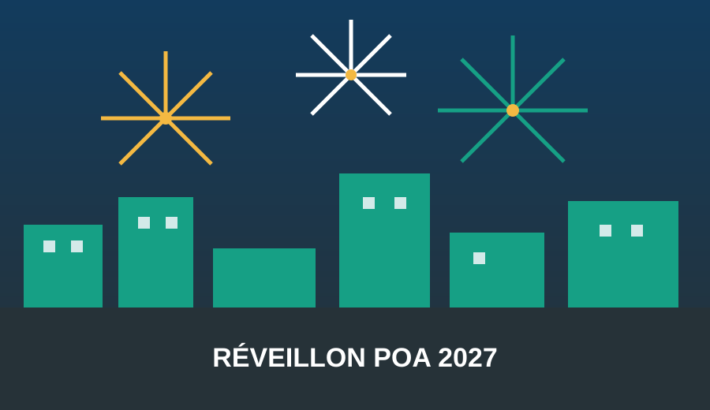

MÚSICA • CELEBRAÇÃO
Réveillon Porto Alegre 2027
Porto Alegre vai receber 2027 com uma festa pública no Parque Harmonia, com apresentações musicais e espetáculo de fogos.
Entrada gratuitaInformações do evento
📅 Data31 de dezembro de 2026
🕒 HorárioShows a partir das 19h
📍 LocalParque Harmonia (Parque Maurício Sirotsky Sobrinho)
🏠 EndereçoAvenida Edvaldo Pereira Paiva, 63 – Praia de Belas, Porto Alegre/RS
Sobre a programação
A Prefeitura anunciou sete horas de shows, uma atração nacional e espetáculo de fogos. A programação artística completa ainda será divulgada. Por isso, confira a página oficial antes do evento para saber os nomes dos artistas, horários e orientações de acesso.
Ingressos e entrada
Entrada gratuita. Não é necessário comprar ingresso para a área geral, conforme as informações divulgadas pela Prefeitura.
A programação detalhada ainda não foi publicada na fonte oficial consultada. Informações de horário e atrações podem ser atualizadas pela organização.